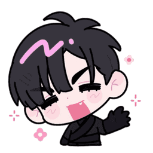

¿Quién es Ivan?
Ivan es uno de los personajes principales de Alien Stage, creado por VIVINOS. Es reconocido por su personalidad tranquila, inteligente y reservada. A pesar de su apariencia seria, demuestra una gran lealtad y una profunda sensibilidad hacia las personas que aprecia, especialmente durante las competencias musicales.
📋 Información básica
- Nombre: Ivan
- Serie: Alien Stage
- Creador: VIVINOS
- Personalidad: Serio, calmado, observador y protector.
- Habilidad: Canto.
- Color representativo: Rojo.
✨ Curiosidades
Ivan es considerado uno de los personajes más complejos de Alien Stage. Su forma de expresar sus emociones, su gran talento artístico y las decisiones que toma durante la historia han hecho que muchos fanáticos lo consideren uno de los personajes más memorables de la serie.